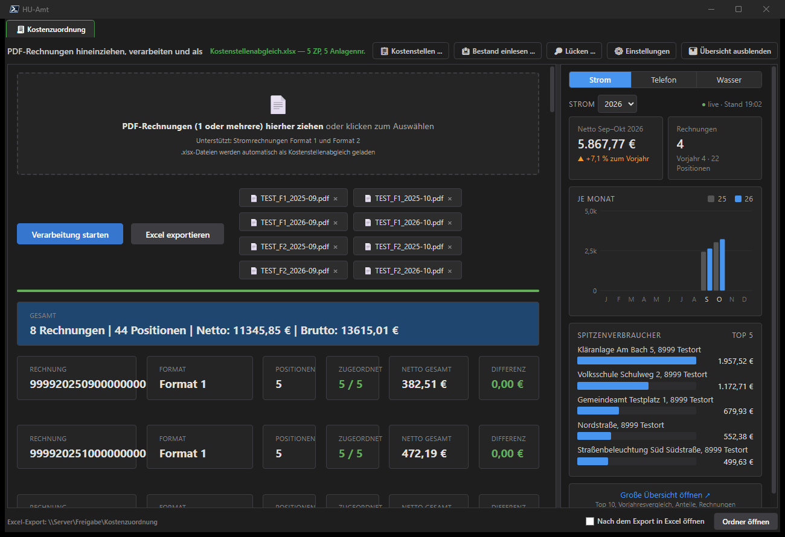
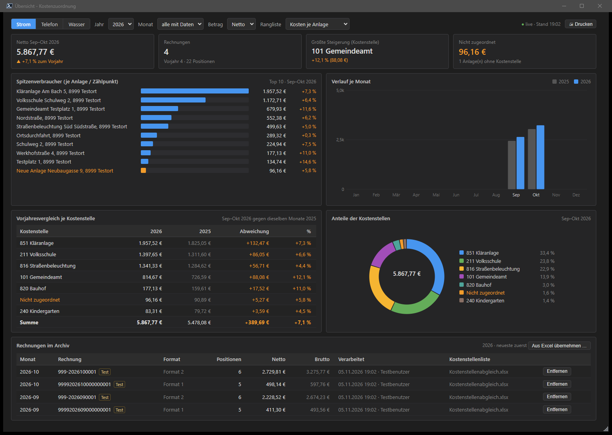
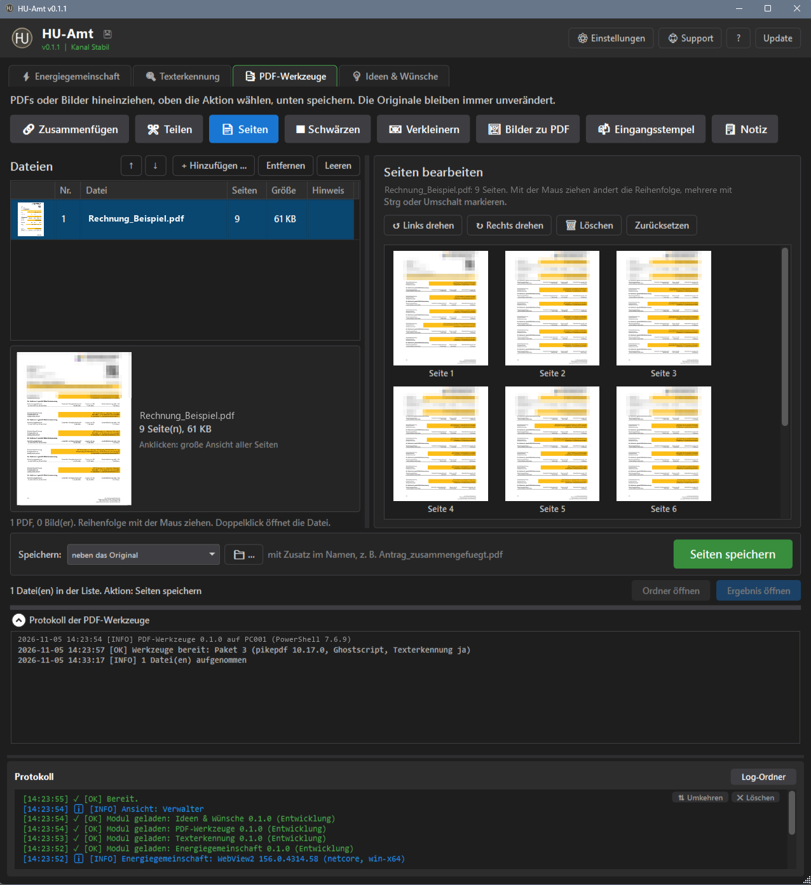
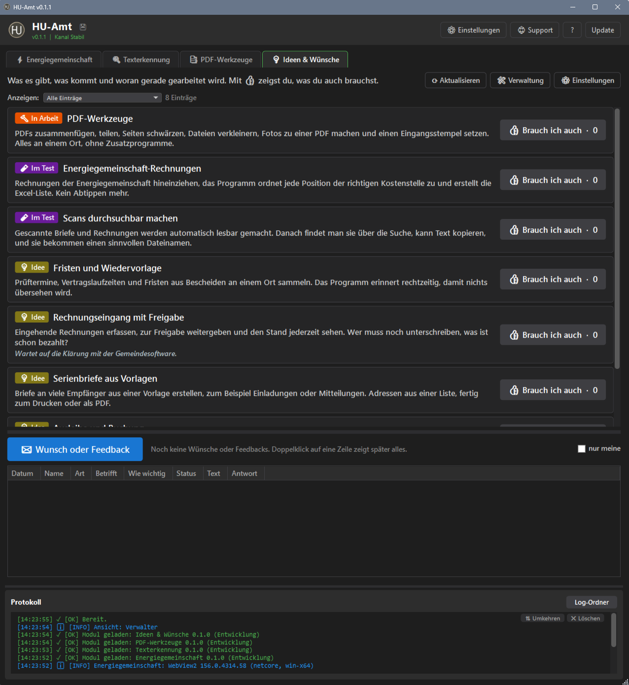

HU-Amt
Werkzeuge für die Gemeindeverwaltung in einem Fenster: Jeder Reiter ist ein Modul. Dazu Update per Knopf, verschlüsselte Sicherung, Hilfe mit F1 und dunkles Farbschema. Läuft ohne Installation aus einem Ordner am PC oder auf einer Netzfreigabe.
Neu hier? Einstieg zeigt typische Situationen aus dem Alltag, Funktionen alles auf einer Seite.
1Einrichten
Installation
- Einen neuen, leeren Ordner anlegen, z. B.
C:\Tools\HU-Amtoder auf der Netzfreigabe, und nurPull.ps1hineinlegen. Rechtsklick aufPull.ps1› Mit PowerShell ausführen. HU-Amt kommt in genau diesen Ordner (nicht in Desktop, Downloads oder Dokumente; dort landet es inDesktop\HU-Amt). Lädt die freigegebene Version und prüft jede Datei per Prüfsumme und Signatur. - Start-HU-Amt.cmd doppelklicken.
- Beim ersten Start fragt HU-Amt: „Ein Symbol für HU-Amt auf den Desktop legen?“ und, wenn es noch nicht angeheftet ist, ob es an die Taskleiste soll. Bei Ja zeigt es, wie das geht: Rechtsklick auf das Symbol in der Taskleiste › An Taskleiste anheften (selbst anheften darf sich ein Programm unter Windows nicht).
Auf einer Netzfreigabe
Den Ordner einmal auf die Freigabe legen. Jeder Benutzer startet Start-HU-Amt.cmd von dort und bekommt beim ersten Start die Frage nach dem Desktop-Symbol. Gemeinsame Listen und die Daten der Module liegen im Ordner Data\ neben dem Programm, persönliche Einstellungen und Zugangsdaten je Windows-Benutzer.
- Jede offene App meldet sich in
Data\Laufendan. Nach einem Absturz gibt Windows die Anmeldung von selbst frei. - Eine gemeinsame Liste bearbeitet immer nur eine Person. Die anderen sehen „gerade in Bearbeitung von …“ und können nur lesen.
- Vor dem Speichern einer gemeinsamen Liste legt HU-Amt eine Kopie mit Zeitstempel an.
- Update und Wiederherstellen gehen erst, wenn alle anderen HU-Amt geschlossen haben. Die Meldung nennt, wer es noch offen hat.
Verwalter
⚙ Einstellungen › Verwalter: Mich hinzufügen oder Hinzufügen (Windows-Benutzername, ohne Domäne oder als DOMÄNE\Name), Markierten entfernen fragt nach und legt vorher eine Kopie der Liste an. Verwalter sehen zusätzlich das Protokoll, die Sicherung, die Update-Einstellungen und die Module. Alle anderen bekommen eine aufgeräumte Oberfläche; das Update per goldenem Knopf geht für alle.
Module eintragen (Zugangsdatei)
Module aus einem privaten Repository bekommt man mit einem Nur-Lese-Token des Herausgebers. Am einfachsten über die Zugangsdatei *.humodule, die alle Repositories und den Token enthält:
- Als Verwalter die Datei ins Hauptfenster ziehen oder ⚙ Einstellungen › Module › Private Module hinterlegen … › Datei einlesen ….
- Die Rückfrage mit der Liste der Repositories bestätigen.
- HU-Amt prüft jeden Zugang vor dem Speichern und zeigt das Ergebnis je Repository.
- Sind alle gespeichert, löscht HU-Amt die Datei. Sonst bleibt sie, und die Meldung nennt, was fehlt.
App-Sicherung
⚙ Einstellungen › Sicherung (nur Verwalter): Sicherungsordner wählen (auch Netzfreigabe oder USB, nie im Programmordner), Kennwort festlegen … – auf Wunsch Für die automatische Sicherung merken (verschlüsselt beim eigenen Windows-Benutzer) –, dann Jetzt sichern oder automatisch täglich bzw. wöchentlich. Die Automatik läuft beim Start oder solange die App offen ist; auf der Freigabe sichert der Erste, dem es fällig wird. aufbewahren legt fest, wie viele Sicherungen je PC bleiben.
| Gesichert | Nicht gesichert |
|---|---|
| gemeinsame Listen und Einstellungen, Daten aller Module, persönliche Einstellungen und Fensterzustand jedes Benutzers, Verwalter-Liste, welche Module installiert waren | Protokolle, Zugangsdaten der Module (Token), das gemerkte Kennwort der Sicherung |
Jede Sicherung wird nach dem Schreiben zurückgelesen und geprüft. Sicherung prüfen … öffnet eine Datei, ohne etwas zu schreiben. Wiederherstellen … zeigt die Bereiche zur Auswahl (je Modul, Benutzer, Verwalter, Allgemein; Verwalter ist orange und nicht vorgewählt), fragt noch einmal nach, legt den aktuellen Stand unter Data\Wiederherstellung ab und startet HU-Amt neu. Installierte Module werden danach neu geladen. Die 💾 in der Kopfzeile zeigt den Stand, während der Sicherung den Fortschritt, bei einem Fehler ein „!“.
Verknüpfung
⚙ Einstellungen › Allgemein: 🖥 Desktop-Verknüpfung, ☰ Startmenü-Eintrag, Desktop für alle Benutzer (braucht Administratorrechte) und Starter neu erstellen. Der Starter HU-Amt.exe im Programmordner hat ein eigenes Logo und kein Konsolenfenster.
2Oberfläche
| Bereich | Inhalt |
|---|---|
| Kopfzeile | Logo, Name, Version und Kanal. Rechts ⚙ Einstellungen, 🛟 Support, ? Anleitung und Update. Für Verwalter die 💾 der Sicherung. |
| Reiter | Jedes Modul ein Reiter. Oben im Reiter steht in einem Satz, was er tut. Der große farbige Knopf ist der Hauptknopf, alles andere ist kleiner oder unter ⚙ Einstellungen im Reiter. Ohne Modul gibt es nur den Reiter Start. |
| Reihenfolge | Reiter mit der Maus verschieben; die Reihenfolge bleibt beim nächsten Start. Rechtsklick auf einen Reiter: Reihenfolge zurücksetzen. |
| Protokoll | Nur für Verwalter, neueste Einträge oben. Höhe am Griff ziehen. |
⚙ Einstellungen › Allgemein: Reiter beim Start (z. B. zuletzt verwendeter), Oberflächengröße, Startanimation. Nur Verwalter: PowerShell beim Start (Automatisch, PowerShell 7 oder Windows PowerShell 5.1) und Protokoll-Stufe mit Log-Ordner.
Data\Benutzer\<Name>. Strg + Mausrad skaliert die Oberfläche, Strg+0 = 100 %.3Dateien hineinziehen und weitergeben
- Dateien aus dem Explorer ins Fenster ziehen: Sie gehen an den offenen Reiter.
- Passt die Datei nicht zu diesem Reiter, aber zu genau einem anderen, wechselt HU-Amt dorthin.
- Reiter können Dateien an andere Reiter weitergeben, z. B. die Texterkennung an die Kostenzuordnung. Die Datei kommt als Kopie ins Postfach des Ziels im gemeinsamen Datenordner – das klappt auch von einem anderen PC aus. Am Reiter steht die Zahl wartender Dateien, z. B. „Kostenzuordnung (3)“; sie wird jede Minute neu gezählt.
- Ob und wohin weitergegeben wird, legst du im Modul fest. Am Inhalt wird nichts erraten.
- Ergebnisse landen in einem festen Ordner; Ordner öffnen zeigt ihn. Für andere Programme schreibt jedes Modul in seinen Übergabeordner: Dateien erscheinen erst fertig geschrieben, mit Zeitstempel im Namen, nichts wird überschrieben.
4Kostenzuordnung
Reiter 🧾 Kostenzuordnung: PDF-Rechnungen hineinziehen, jede Position der richtigen Kostenstelle zuordnen und als Excel exportieren. Jede Zuordnung gehört zu einer Kostenart (vorgegeben Strom und Telefon), ausgewertet wird immer eine Kostenart für sich.


Rechnungen verarbeiten
- Oben rechts den Stand der Kostenstellenliste prüfen: grün = geladen, orange = fehlt.
- PDFs auf die Ablage ziehen oder auf die Ablage klicken und auswählen; × nimmt eine Datei wieder heraus. Liegen Rechnungen im Postfach, zeigt der Reiter 📬 n neue Rechnung(en) – 📥 Laden legt sie in die Ablage.
- Verarbeitung starten: Je Rechnung erscheinen Kacheln (Rechnungsnummer, Format, Positionen, Zugeordnet, Netto, Differenz) und eine Tabelle der Positionen. Positionen ohne Kostenstelle stehen orange als Nicht zugeordnet.
- Excel exportieren …: ohne Rückfrage in den Export-Ordner (Standard
Downloads\Kostenzuordnung), auf Wunsch Nach dem Export in Excel öffnen. Die Datei hat das Blatt Zusammenfassung und je Rechnung ein eigenes Blatt.
Eingelesen werden zwei Formate von Stromrechnungen: Rechnungen mit Zählpunkten und Sammelrechnungen mit Anlagennummern. Zuordnungen für Telefon (per Rufnummer) lassen sich schon anlegen; das Einlesen von Telefonrechnungen folgt.
Kostenstellen
📋 Kostenstellen … öffnet den Editor mit den Reitern Zuordnungen (Kostenart, Art ZP/Anlage/Rufnummer, Nummer, Kostenstelle, Bezeichnung), Kostenstellen (Bezeichnung, Haushaltsstelle; löschen nur ohne Zuordnung) und Kostenarten (Strom und Telefon vorgegeben, umbenennen, neue anlegen, z. B. Wasser; löschen nur ohne Zuordnung). Doppelklick oder F2 bearbeitet eine Zelle, dazu in jedem Reiter Zeile hinzufügen, Zeile löschen und Suchen. Excel importieren … zeigt vorher, was neu, entfernt oder geändert ist; Excel exportieren … schreibt die Liste hinaus. Speichern nur für Verwalter: doppelte Nummern oder fehlende Angaben sperren das Speichern, die bisherige Liste wird vorher gesichert.
Archiv und Lücken
- Jede verarbeitete Rechnung kommt ins Archiv, nach Jahr geordnet. Dieselbe Rechnung noch einmal ersetzt die alte.
- 📥 Bestand einlesen …: einen Ordner samt Unterordnern übernehmen, PDFs in Paketen zu 20, abbrechbar. Danach eine Liste, was nicht ging.
- 🔎 Lücken … zeigt fehlende Monate je Zählpunkt bzw. Anlage, z. B. „fehlt: März 2026“. Ändert nichts.
- Alte Excel-Exporte übernimmt Aus Excel übernehmen … oder Hineinziehen.
- Entfernen (nur Verwalter) legt die Rechnung in
_Entfernt.
Übersicht
Die Seitenleiste zeigt für die gewählte Kostenart Netto gegen dieselben Monate im Vorjahr, die Zahl der Rechnungen, Säulen je Monat und die fünf Spitzenverbraucher. Breite am Griff ziehen, 📊 Übersicht ausblenden. ● live: Rechnungen anderer erscheinen nach spätestens 10 Sekunden.
Große Übersicht öffnen ↗: Auswahl nach Kostenart, Jahr, Monat, Betrag (Netto oder Brutto) und Rangliste (Kosten je Anlage, je Kostenstelle, größte Steigerung). Dazu Top 10, Verlauf, Vorjahresvergleich, Anteile und die Liste der Rechnungen. 🖨 Drucken im Querformat, auch als PDF; Esc schließt.


Einstellungen
| Reiter | Inhalt |
|---|---|
| Pfade | Excel-Export, Ergebnisse (JSON), Ordner der Kostenstellenliste (nur Verwalter) |
| Export | Dateiname mit Platzhaltern {name}, {rechnung}, {monat}, {datum}; je Abrechnungsmonat ein Unterordner; verarbeitete PDFs neben die Excel-Datei; Nummer anhängen oder überschreiben; in Excel öffnen; im Explorer zeigen |
| Aufbewahrung | Ergebnisse (Standard 100), Kopien der Kostenstellenliste (Standard 20, nur Verwalter) |
5Texterkennung
Reiter 🔍 Texterkennung: Gescannte PDFs werden durchsuchbar gemacht, benannt und abgelegt. PDFs hineinziehen für sofortige Texterkennung.
Werkzeuge laden
Beim ersten Mal steht oben „Werkzeuge: noch nicht auf diesem PC“ – Werkzeuge laden. Geladen werden etwa 200 MB je PC und Windows-Benutzer. Jede Datei wird gegen eine Prüfsumme geprüft, dann folgt eine Probe-Erkennung; danach steht „Werkzeuge: Paket … bereit“. Ein neues Werkzeugpaket kommt mit dem Modul-Update, wird im Hintergrund geladen und erst nach erfolgreicher Probe aktiv.
Überwachte Ordner
- 📁 Ordner … › + Für alle (nur Verwalter, z. B. eine Freigabe) oder + Nur dieser PC.
- Name, Eingang und Ausgang (leer = Übergabeordner) eintragen, Aktiv anhaken. Unter Danach an auf Wunsch ein anderes Modul wählen.
- Dateinamen aus Bausteinen zusammensetzen: Datum, Zeit, Original, Ordner, Seiten, PC und Text aus dem Dokument … (Muster). Mit einer PDF prüfen … zeigt eine Vorschau.
Gibt es den Namen schon, kommt _2, _3 dazu. Gleicher Ein- und Ausgang wird gesperrt. Vor dem Speichern wird die bisherige Liste gesichert.
Im Alltag
- Die Ordnerliste zeigt Wartend, In Arbeit und Hinweis; Doppelklick öffnet den Eingang.
- Zuletzt verarbeitete Dateien aller PCs mit Ergebnis öffnen, Original öffnen, Ordner öffnen. Weitergeben … gibt die PDF an ein anderes Modul.
- Kein fester OCR-PC: Jede Datei holt genau ein PC mit offenem HU-Amt ab – erst, wenn der Scanner fertig ist. Die Ordner werden alle 15 Sekunden abgefragt.
- Originale kommen nach
processed, fehlerhafte Dateien nachquarantinemit einer.fehler.txt. Liegengebliebene Dateien (über 2 Stunden bei einem anderen PC) gibt ein Verwalter mit Zurückgeben frei. - ⏸ Überwachung anhalten hält nur diesen PC an.
- Hineinziehen oder 📄 PDFs auswählen …: Das Ergebnis heißt standardmäßig
Name_OCR.pdfund liegt neben dem Original.
6PDF-Werkzeuge
Reiter 📑 PDF-Werkzeuge: PDFs oder Bilder hineinziehen, oben die Aktion wählen, unten speichern. Die Originale bleiben immer unverändert.
- Dateien ziehen oder + Hinzufügen …. Beim Hineinziehen kommt ein Vorschlag: mehrere PDFs › Zusammenfügen, eine PDF › Seiten, Bilder › Bilder zu PDF.
- Oben eine der Aktionen wählen, rechts die Optionen einstellen.
- Speichern: neben das Original oder in einen festen Ordner, bei gleichem Namen mit
_2,_3.
Die Dateiliste zeigt Vorschau, Seiten, Größe und Hinweis. Reihenfolge per Ziehen oder ↑ ↓, Doppelklick öffnet die Datei, Klick auf die Vorschau zeigt alle Seiten groß.


| Aktion | Wirkung |
|---|---|
| 🔗 Zusammenfügen | alle Dateien in einer PDF, auf Wunsch je Datei ein Lesezeichen mit dem Dateinamen |
| ✂ Teilen | nach Seitenbereichen (z. B. 1-3, 5, 8-), jede Seite einzeln oder nach Lesezeichen; die Teile kommen in den Ordner <Name>_geteilt |
| 📄 Seiten | drehen, löschen, zurücksetzen, mit der Maus umsortieren (mehrere mit Strg oder Umschalt) |
| ⬛ Schwärzen | siehe unten |
| 📧 Verkleinern | Bildschirm (72 dpi), Mail (empfohlen, 150 dpi), Druck (300 dpi); vorher, nachher, Ersparnis. Wird eine Datei nicht kleiner, wird sie nicht gespeichert. |
| 🖼 Bilder zu PDF | JPG und PNG, Handyfotos werden gedreht; Seitengröße wie das Bild oder A4; auf Wunsch mit Texterkennung |
| 📬 Eingangsstempel | Text, Kürzel, Position, Farbe, Größe, Rahmen, erste oder alle Seiten; Vorlagen für sich oder (Verwalter) für alle |
| 🗒 Notiz | Notizzettel aufziehen und beschriften; bleibt in Acrobat eine bearbeitbare Anmerkung |
Schwärzen
- Suchbegriffe eintragen, je Zeile einen, und 🔎 Suchen – oder ein Muster (Regex). Treffer lassen sich einzeln abwählen.
- Weitere Stellen mit 🖱 Mit der Maus markieren …: Rahmen aufziehen, Rechtsklick entfernt ihn.
- Auf Wunsch Danach Texterkennung (geschwärzte Seiten bleiben durchsuchbar) oder Alle Seiten rastern (am sichersten, Datei wird größer).
- Speichern: Vorher wird geprüft. Besteht die Prüfung nicht, wird nichts gespeichert.
Formularfelder, Kommentare, Lesezeichen, Anhänge und Eigenschaften werden beim Schwärzen immer entfernt.
Notizzettel
- Text, Farbe und Schrift wählen oder eine Vorlage. Bausteine:
{Datum},{Zeit},{Kürzel},{Benutzer}. - 🗒 Zettel setzen …: Zettel aufziehen, verschieben oder am Eck die Größe ändern; Rechtsklick entfernt ihn.
- Übernehmen, dann speichern. Das Ergebnis heißt
Name_notiz.pdf.
7Ideen & Wünsche
Reiter 💡 Ideen & Wünsche: Was es gibt, was kommt und woran gerade gearbeitet wird. Mit 👍 zeigst du, was du auch brauchst.


- Status: 🔨 In Arbeit, 🧪 Im Test, 📋 Geplant, 💡 Idee, ✅ Fertig, ⏸ Zurückgestellt. In Arbeit und Im Test stehen oben, dann nach Stimmen.
- Filter Anzeigen:, rotes Neu seit dem letzten Besuch.
- 👍 Brauch ich auch: eine Stimme je Person und Eintrag, ein zweiter Klick nimmt sie zurück. Der Tooltip zeigt, wer gestimmt hat.
Wunsch oder Feedback
- ✉ Wunsch oder Feedback.
- Art wählen (Wunsch, Fehler, Frage, Lob/Sonstiges), dazu Betrifft, Wie wichtig, Text und Name. Auf Wunsch einen Anhang hineinziehen oder Datei wählen ….
- ✉ Absenden – damit ist der Eintrag gespeichert. Die Mail öffnet sich im Mailprogramm, dort auf Senden klicken (Anhang nur mit Outlook klassisch).
Unten stehen alle Feedbacks mit Status (neu, gelesen, übernommen, erledigt, abgelehnt) und Antwort; nur meine filtert, Doppelklick zeigt alles. Die Liste lädt alle 90 Sekunden neu, sofort mit ⟳ Aktualisieren.
Verwaltung
🛠 Verwaltung (Verwalter): Reiter Einträge der Liste mit + Neu, Bearbeiten …, ▲ Hoch, ▼ Runter, Löschen …; Reiter Feedbacks mit Status, Antwort speichern, Anhang öffnen und 💡 Als neue Idee übernehmen; Reiter Übersicht. Solange das Fenster offen ist, kann kein anderer Verwalter die Liste ändern. ⚙ Einstellungen: Empfänger, Anhänge bis (MB), Mailweg.
8Update
Beim Start sucht HU-Amt im Hintergrund nach Updates; bei einer neuen Version wird Update gold. Klick: HU-Amt schließt sich, Pull.ps1 lädt die neue Version ganz, prüft jede Datei gegen die Prüfsummen-Liste und die Signatur des Herausgebers und ersetzt erst dann. Bei einem Fehler bleibt alles, wie es war. Danach startet HU-Amt neu. Data\ und lokale Einstellungen werden nie angefasst.
| Rechtsklick auf Update | Wirkung |
|---|---|
| Jetzt nach Updates suchen | sofort prüfen |
| Info … | Version, Kanal, Prüfung der installierten Version |
| Andere Version / Vorversion installieren … | Liste aller Releases (nur Verwalter) |
| Kanal: Testversionen annehmen | Häkchen = Kanal Test, auch Vorab-Versionen (nur Verwalter) |
| Module (private Repositories) … | Zugänge der Module hinterlegen oder entfernen (nur Verwalter) |
⚙ Einstellungen › Update: Beim Start nach Updates suchen, Jetzt prüfen, Kanal Stabil (freigegebene Versionen) oder Test (auch Vorab-Versionen), Nur signierte Updates installieren (empfohlen).
9Hilfe und Support
F1 oder ? öffnet die Hilfe zum aktuellen Reiter, Rechtsklick auf ? die Übersicht.
- 🛟 Support: aufschreiben, was passiert ist (Schritte, Fehlermeldung, erwartetes Ergebnis).
- Unter Mitsenden wählen: Protokolle (3 Tage) und Ausgaben, Einstellungen (ohne Kennwörter), Anonymisieren (empfohlen).
- ZIP erstellen und ansehen oder Per E-Mail senden. Das ZIP liegt auf dem Desktop.
Anonymisiert werden E-Mail-Adressen, IDs, IP-Adressen, der Programmordner, Benutzer und PC. Nie enthalten: Daten der Module, Kennwörter, Tokens, Sicherungen.
10Was passiert mit deinen Dateien
Hier steht, was HU-Amt selbst mit Dateien macht. Was ein Modul mit seinen Dateien tut (Rechnungen, Scans, PDFs), steht in der Hilfe des Moduls (F1 im Reiter) unter „Was passiert mit deinen Dateien“.
Wo liegt was
Alle Daten liegen im Ordner Data im Programmordner. Läuft HU-Amt von einem Netzlaufwerk, liegen die Daten also mit auf der Freigabe. Einen anderen Datenordner kann man nicht einstellen. Ist Data nicht beschreibbar, startet HU-Amt nicht und sagt das.
| Ordner oder Datei | Inhalt | Für wen |
|---|---|---|
Data\<Modul>\ | Daten des Moduls, z. B. Listen, Archiv, Übergabeordner Ausgang; dazu _Kopien mit den Ständen vor dem Speichern | alle |
Data\Benutzer\<Name>\ | eigene Einstellungen, Fenster, Protokolle (Logs), Zugänge der Module (Token, verschlüsselt) | nur du |
Data\Postfach\<Modul>\ | Dateien, die ein anderes Modul weitergegeben hat, je Datei ein eigener Unterordner | alle |
Data\Verwalter.txt | Liste der Verwalter | alle (nur Verwalter ändern) |
Data\Laufend\ | wer HU-Amt gerade auf welchem PC offen hat | alle |
Data\Wiederherstellung\ | Stand vor einer Wiederherstellung (die letzten fünf) | Verwalter |
Addons\ · AddonsDev\ | signierte Module · Module in Entwicklung | Programm |
| Sicherungsordner | HU-Sicherung_<PC>_<Datum>.husicherung, verschlüsselt | Verwalter |
<Name> ist der Windows-Anmeldename ohne Domäne. Zwei Konten mit gleichem Namen aus verschiedenen Domänen teilen sich deshalb einen Ordner.
Was mit der Originaldatei passiert
- Hineinziehen: HU-Amt gibt die Datei an den Reiter weiter, kopiert nichts und ändert nichts daran. Was danach passiert, entscheidet das Modul.
- Weitergeben an ein anderes Modul: Ins Postfach kommt eine Kopie mit dem Originalnamen. Das Original bleibt, wo es ist; löscht man es danach, hat das Postfach trotzdem seine Kopie. Der Eintrag verschwindet erst, wenn das Ziel-Modul die Datei übernommen hat.
- Übergabeordner für andere Programme: Dateien heißen
<Name>_JJJJ-MM-TT_HHmmss, bei Gleichstand mit_2,_3. Sie erscheinen erst fertig geschrieben; nichts wird überschrieben. - Ausnahme Modul-Datei (
*.humodule): Wird sie hineingezogen und sind alle Zugänge gespeichert, löscht HU-Amt die Datei, weil sie Zugangsdaten enthält. Klappt etwas nicht, bleibt sie liegen.
Was wie lange bleibt
| Was | Wie lange |
|---|---|
| Protokolle von HU-Amt (eines je Tag, ab 10 MB weitere Teile) und der Module | 30 Tage, gelöscht beim Start |
| Kopien einer gemeinsamen Liste vor dem Speichern | die letzten 20 (Verwalterliste: 10); die Module können eigene Zahlen haben |
| Sicherungen | die letzten 10 je PC |
| Stände vor einer Wiederherstellung | die letzten 5 |
| Postfach-Einträge | bis das Ziel-Modul sie übernommen hat |
| Support-ZIP | auf dem Desktop, bis du es löschst |
Wenn du im Explorer etwas änderst
| Du … | Folge |
|---|---|
löschst Data\<Modul> | Beim nächsten Zugriff entsteht ein leerer Ordner. Die Daten des Moduls sind weg, zurück nur über die Sicherung. |
benennst Data\<Modul> um oder verschiebst ihn | Das Modul sieht seine Daten nicht mehr und fängt leer an. Der umbenannte Ordner bleibt liegen und kommt trotzdem in die Sicherung. |
löschst Data\Benutzer\<Name> | Beim nächsten Start fragt HU-Amt wie beim ersten Mal. Eigene Einstellungen, Protokolle und die Zugänge der Module sind weg; die Zugänge muss ein Verwalter neu hinterlegen. |
löschst etwas in Data\Postfach | Der Eintrag ist einfach weg, ohne Fehlermeldung. |
löschst eine Datei in Data\Laufend | Geht nicht, solange die App läuft; die Datei ist offen. Bleibt nach einem Absturz eine zurück, räumt HU-Amt sie selbst weg. |
benennst einen Modulordner in Addons oder AddonsDev um | Das Modul wird nicht mehr geladen; im Protokoll steht „Ordnername passt nicht zur Kennung“. Die Daten bleiben, denn sie hängen an der Kennung, nicht am Ordner. |
| legst eigene Dateien in den Programmordner | Ein Update lässt sie liegen, außer eine Datei heißt genauso wie eine Programmdatei. |
Data nichts von Hand löschen, umbenennen oder verschieben, solange jemand HU-Amt offen hat. Wer aufräumen will: erst eine Sicherung machen.Mehrere Benutzer und Netzlaufwerk
- Eine gemeinsame Liste kann nur eine Person zugleich bearbeiten. Die anderen sehen „Gerade in Bearbeitung von … (PC) seit …“ und können nur lesen.
- Stürzt ein PC ab, gibt Windows die Sperre frei; beim nächsten Versuch räumt HU-Amt sie weg.
- Vor dem Speichern einer gemeinsamen Liste legt HU-Amt eine Kopie mit Zeitstempel in
_Kopienneben der Liste an. - Ein Update geht erst, wenn alle anderen HU-Amt geschlossen haben. Sonst bricht es ab, ohne etwas zu ändern.
Data,AddonsundAddonsDevfasst ein Update nie an.
Was in der Sicherung ist
| Drin | Nicht drin |
|---|---|
alles unter Data: Daten aller Module, Postfach, _Kopien, Verwalterliste, Einstellungen und Fenster aller Benutzer | Protokolle, Zugänge der Module (Token), das Kennwort der automatischen Sicherung, Sperrdateien, Programm, Module, Config; Übergabeordner außerhalb von Data |
- Wiederherstellen geht nur, wenn sonst niemand HU-Amt offen hat. Vorher kommt der aktuelle Stand der betroffenen Dateien nach
Data\Wiederherstellung. - Überschrieben werden nur Dateien, die in der Sicherung stehen. Was seither neu dazugekommen ist, bleibt liegen.
- Danach startet HU-Amt neu; das Kennwort der automatischen Sicherung muss neu gesetzt werden.
11Tastenkürzel
| Taste | Wirkung |
|---|---|
| F1 | Hilfe zum aktuellen Reiter |
| Strg + Mausrad · Strg+0 | Oberfläche größer/kleiner · 100 % |
| F2 | Zelle bearbeiten (Kostenstellen-Editor) |
| Esc | große Übersicht schließen |